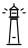

MAISON JF®
Crio produtos e serviços para te ajudar a perceber o que se passa contigo. E o que podes fazer depois de saberes isso.
O QUE ESTÁS A IGNORAR?

SEGUE O FAROL → Não sei por onde começar.Quero voltar a gostar de chegar a casa.
ENTRAR →O meu corpo está a pedir que eu pare.
ENTRAR →Preciso de perceber o que fazer com isto.
ENTRAR →Não quero passar por isto sozinho.
ENTRAR →Explora a Maison
Já sabes o que procuras?
Então não te vou fazer perder tempo.
Profissionais · B2B
O teu cliente sente o espaço antes de comprar.
Aroma, toque e pequenos rituais. Porque há espaços de onde sais e outros que levas contigo.
A MAISON JF
No fim, agora que já me conheceste, eu digo-te o porquê.
NÃO VOU DIZER-TE QUE VAI FICAR TUDO BEM.
Talvez fique. Talvez não.
Também não vou dizer-te quem deves ser, com quem deves ficar ou o que deves fazer da tua vida.
Já há gente suficiente a fazer isso por ti.
Eu prefiro ajudar-te a olhar.
Para aquela coisa que te anda a incomodar e que continuas a empurrar para depois.
Para a pergunta que já fizeste de dez maneiras diferentes à espera que, à décima primeira, a resposta mude.
Para aquela situação que muda de nome, de emprego, de relação, de pessoa... mas que, por algum motivo, acaba sempre por te levar ao mesmo sítio.
Às vezes não sabes mesmo o que se passa contigo.
Outras vezes sabes. Só não te apetece nada olhar para isso.
Eu percebo.
Também já fiz isso.
Mais vezes do que provavelmente devia.
Foi daí que nasceu a Maison JF.
Não porque tenha encontrado as respostas todas.
Não encontrei.
E desconfio sempre um bocadinho de quem diz que encontrou.
Criei a Maison porque acredito que há coisas que podem ajudar-nos a perceber melhor o que se passa connosco.
Uma pergunta.
Um livro.
Uma conversa.
Uma carta.
Um cheiro.
Um objecto.
Um teste que começa por brincadeira e, de repente, acerta numa coisa que não estavas nada à espera de encontrar ali.
É por isso que crio produtos e serviços para a tua Casa, o teu Corpo, a tua Cabeça e a tua Presença.
Porque tu também não és só uma coisa.
Há dias em que precisas de pensar.
Há outros em que pensar mais é precisamente aquilo de que não precisas.
Às vezes precisas de mudar alguma coisa à tua volta.
Outras vezes precisas de parar cinco minutos.
E às vezes precisas simplesmente que alguém te faça a pergunta certa.
Não tenho nenhuma fórmula mágica para isso.
Ainda bem.
As coisas que encontrares aqui não foram feitas para te dizer o que tens de fazer.
Foram feitas para conversar contigo.
Algumas vão ser bonitas.
Outras vão fazer-te rir.
Algumas podem irritar-te.
E, de vez em quando, espero que alguma te faça parar e pensar:
“Foda-se. Como é que ele sabe isto?”
Não sei.
A sério.
Mas tu sabes.
Porque essa é a parte engraçada disto tudo.
Eu posso fazer-te a pergunta.
Posso mostrar-te outra maneira de olhar.
Posso pôr qualquer coisa à tua frente que te faça parar por um segundo.
Mas aquilo que reconheceste?
Já estava em ti.
E é aí que esta conversa começa a ficar interessante.
Não quero pensar por ti.
Muito menos quero que penses como eu.
Quero que perguntes. Que duvides. Que experimentes. Que mudes de ideias. Que voltes atrás se for preciso.
E que, quando alguma coisa já não fizer sentido, tenhas pelo menos a coragem de admitir isso a ti próprio.
Depois logo vês o que fazes.
Não precisas de resolver a tua vida hoje.
Também não precisas de transformar cada descoberta numa epifania.
Às vezes uma coisa é só uma coisa.
Mas, quando alguma coisa te fizer parar... não a ignores logo.
Fica ali um bocadinho.
Olha outra vez.
Pode não ser nada.
Ou pode ser aquela merda que andas há três anos a fingir que não vês.
E depois?
Depois decides tu.
A vida continua a ser tua.
Eu só deixei a luz acesa.
EU
Eu sou o João.
E não criei a Maison porque tivesse encontrado todas as respostas.
Provavelmente criei-a porque passei demasiado tempo a fazer perguntas.
Passei por mundos diferentes e fui ficando obcecado com uma coisa: aquilo que sabemos, mas continuamos a empurrar para depois.
A Maison é a forma que encontrei de pôr isso em livros, objectos, perguntas, rituais e conversas.
O resto ainda estou a descobrir.